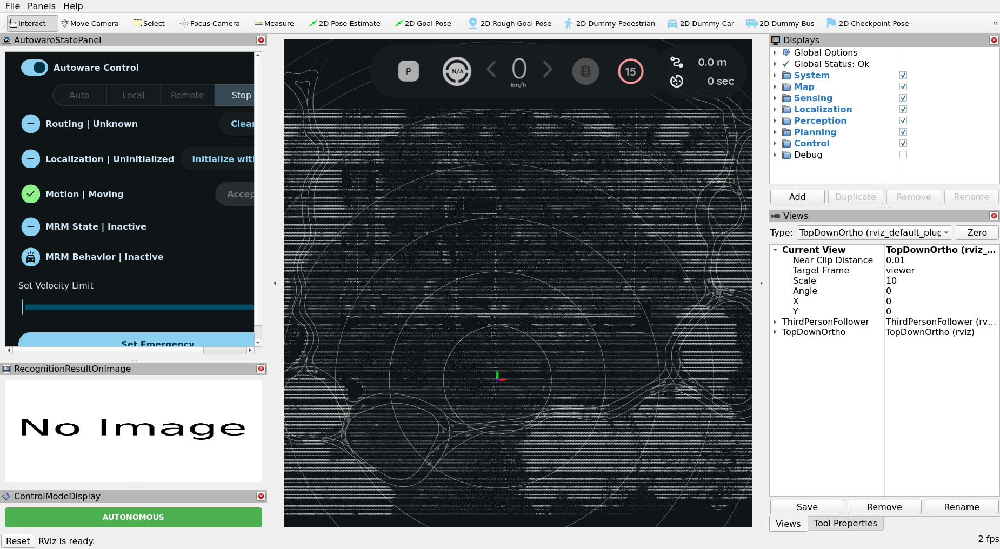
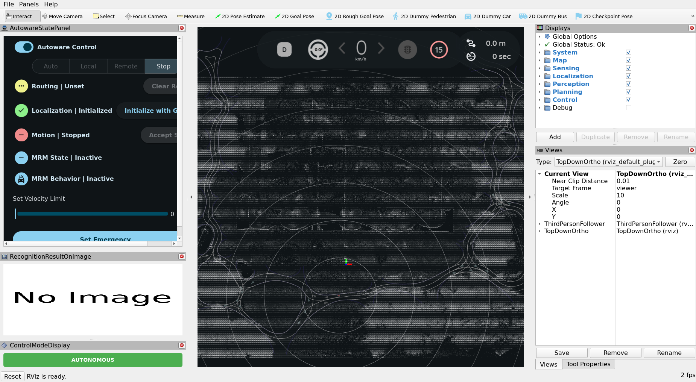

2. 路徑規劃模擬#
單獨看規劃組件。
這裡沒有感測器、沒有定位、也沒有感知。你告訴車輛它在哪、要去哪；它算出一條路線、 把它變成軌跡，然後跟著走。因為姿態是*給定*的，位置不可能出錯——所以任何出錯的東西 都是一個規劃決策，而這正是這裡適合學規劃的原因。
它不需要 GPU、不需要 rosbag、也不需要感測器。
啟動#
source /opt/autoware/1.5.0/setup.bash
source install/setup.bash
play_launch launch autoware_launch planning_simulator.launch.xml \
map_path:=$PWD/data/COSS-map-planning \
vehicle_model:=autosdv_vehicle \
sensor_model:=autosdv_sensor_kit
把那道指令分成四個部分來讀，因為本書裡每一道啟動指令都是同樣的形狀：
play_launch launch <package> <launch file> <arg>:=<value> ...
^ ^ ^
the verb a file inside that package launch arguments
也就是：動詞、套件名稱、該套件裡的啟動檔，以及啟動參數。
play_launch launch 接一個套件名稱與該套件裡的啟動檔，後面接任意數量的
name:=value 參數——文法和 ros2 launch 相同，你也可以直接換成它（為什麼本書
用 play_launch）。
那三個參數就是全部的設定：用哪張地圖、哪個車輛描述、哪個感測器套件描述。
注意套件是 autoware_launch——這個啟動檔來自 Autoware 本身。讓它成為一個 AutoSDV
模擬的是 vehicle_model:=autosdv_vehicle，它提供真實車輛的尺寸、軸距與轉向極限，
所以你看到的軌跡是這台車真的能跟隨的。
在一台桌機上，啟動器會在一兩秒內回報所有節點就緒——34 個節點、15 個容器、70 個 可組合節點——而 RViz 視窗大約一分鐘內可用。
你正在看什麼#

有四個區域重要。
工具列，在最上方。Interact、Move Camera、Select、Focus Camera、
Measure，接著是你會用到的那些：2D Pose Estimate、2D Goal Pose、
2D Rough Goal Pose、2D Dummy Pedestrian、2D Dummy Car、2D Dummy Bus、
2D Checkpoint Pose。
AutowareStatePanel，在左側。這是要盯著看的東西，啟動時它顯示：
| 欄位 | 啟動時 |
|---|---|
| Autoware Control | 開 |
| （模式按鈕） | Auto Local Remote Stop——選中 Stop |
| Routing | Unknown |
| Localization | Uninitialized |
| Motion | Moving |
| MRM State / Behavior | Inactive |
3D 檢視，在中間，從上方顯示 COSS Park 的 lanelet 地圖。白線是車道邊界。目前還 沒有車輛，因為定位尚未初始化。
Displays 面板，在右側，每個管線組件一個群組——System、Map、Sensing、 Localization、Perception、Planning、Control。那些正是 主題所使用的組件名稱。
步驟 1 —— 放置車輛#
點選工具列的 2D Pose Estimate，然後在地圖上**按住並拖曳**：按下的位置決定
位置，拖曳的方向決定朝向。放開。
面板隨之改變：

| 欄位 | 之前 | 之後 |
|---|---|---|
| Localization | Uninitialized | Initialized ✓ |
| Routing | Unknown | Unset |
| Motion | Moving | Stopped |
| 檔位 | P |
D |
車輛現在存在了、靜止、掛在前進檔，而且無處可去。
盯著那個面板，而不是地圖。這份教學的每個步驟都會先在那裡顯示出來，而當某件事不成功 時，幾乎都是因為某個你預期會改變的欄位沒有改變。
還有一個 Initialize with GNSS 按鈕
就在 Localization 那一列旁邊。它是給戶外、有定位訊號的真實車輛用的。在模擬中 沒有 GNSS，所以請手動放置姿態。
步驟 2 —— 給它一個目標#
點選 2D Goal Pose，然後在道路上別處按住並拖曳——同樣地，拖曳決定車輛抵達時
要面向哪邊。
會出現兩樣東西，而它們之間的差別正是規劃的核心：
- 路線（route） —— 從這裡到那裡的車道序列，依 lanelet 地圖計算一次。除非你更改 目標，否則它不會變。
- 軌跡（trajectory） —— 帶有沿途速度的實際路徑，持續重新計算。這才是控制器跟隨 的東西。
面板中的 Routing 會變成 Set。
什麼都沒出現的時候#
被拒絕的目標什麼都不會說——沒有訊息、沒有標記，Routing 就只是停在 Unset。原因
有兩個，而它們需要不同的處理。
目標不在 lanelet 裡面。 「看起來像路」並不夠：目標必須落在地圖定義的車道範圍 內，而在這張地圖上那個範圍比看起來窄。朝向反而寬鬆——大約車道方向 ±45° 都會被接 受——所以失敗幾乎都是位置。請點在車道中間，而不是界線上。
stack 還沒準備好。 mission planner 在啟動後大約需要一分鐘才會接受任何東西，在 那之前送出的目標會被拒絕，表現得和目標離開道路一模一樣。等一下再點一次；剛才失敗 的同一個目標就會生效。
一組已知可行的目標
如果你想先把教學看完、之後再找可行的位置，就用這一組。寫這一頁時實際跑過： 28.4 公尺、最高 3.12 m/s，抵達誤差 0.1 公尺以內。
| x | y | 朝向 | |
|---|---|---|---|
| 初始位姿 | −1.84 | −8.28 | 約 175° |
| 目標 | −27.9 | −4.4 | 約 135° |
座標是 map 座標系中的公尺，原點由 map_projector_info.yaml
固定——見地圖與 Rosbag。你是在 RViz 裡用眼睛放的，
誤差一公尺左右就夠了。
步驟 3 —— 開車#
點選 AutowareStatePanel 中的 Auto。
車輛開始跟隨軌跡。注意檢視上方的速度表，以及會變成 Moving 的 Motion 欄位。
如果第一次點下去沒反應，就再點一次。 當操作模式還在切換中時，engage 會被拒絕 ——而路線設定完之後的一兩秒正是切換中——並且這個拒絕是無聲的。過一會兒再點一次就 會生效。
如果還是不動，答案就在面板上。Routing | Unset 表示沒有目標生效。
Localization | Uninitialized 表示步驟 1 沒有生效。這兩者都比真正的規劃失敗常見。
現在來實驗#
這是最值得花時間的部分。唯一在跑的是規劃器，所以你看到的一切都是規劃器。
放一個障礙物在路中間#
選擇 2D Dummy Car 並點在車輛前方的道路上。
看看發生什麼：路線不會變——車道還是那些車道——但**軌跡**會變。依可用空間多寡， 車輛會減速、停下，或繞過去。那就是步驟 2 中那個區別的具體呈現。
2D Dummy Pedestrian 與 2D Dummy Bus 做同樣的事，但佔用面積與行為規則不同。
行駛中更換目標#
在車輛移動時設定一個新的 2D Goal Pose。路線會從目前位置重新規劃。
在第二個終端機中觀察管線#
source /opt/autoware/1.5.0/setup.bash && source install/setup.bash
ros2 topic echo /planning/scenario_planning/trajectory --once
ros2 topic echo /control/command/control_cmd --once
ros2 topic hz /control/command/control_cmd
軌跡是規劃器的輸出；控制命令是控制器由它推導出的。在真實車輛上，那個命令會送到 致動器。
這也是命名慣例回報你的時刻——/planning/… 與 /control/… 在你對其他事一無所知時，
就告訴你是哪個組件產出了什麼。參閱
Autoware 管線。
停止#
在 play_launch 的終端機按 Ctrl-C，然後確認沒有殘留：
這一步沒有測試到什麼#
所有跟真實世界有關的東西：
- 定位 —— 姿態是你斷言的；沒有任何感測器需要找出它
- 感知 —— 障礙物是因為你點了才出現，完全已知
- 感測 —— 沒有驅動程式執行，沒有點雲存在
而那正是下一頁的重點：同樣的堆疊，把這三者放回去，並用一段真實行駛的錄製來餵它們。
接下來： 3. 記錄回放模擬